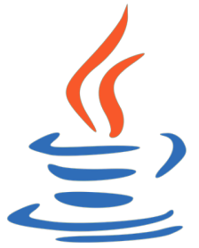
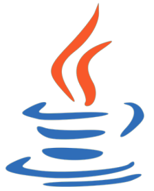

Ago. 2019 - Presente
Coordinador de Seguimiento
Instituto de Capacitación Les Halles - Santiago, Chile
Responsable de monitorear a los participantes inscritos en los cursos e-learning diseñados por el instituto,esto incluye asistencia en el uso de la plataforma, registro de asistencia, reporte de calificaciones y elaboración de certificados.
Feb. 2017 - Oct. 2018
Administrador
Fundamentos Tecnológicos C.A. - Puerto Ordaz, Venezuela
Encargado de dirigir y realizar los preparativos para los cursos de capacitación técnica ofrecidos por la empresa, elaborando los itinerarios y verificando que los equipos necesarios para su ejecución estuvieran en buen estado.
Nov. 2015 - Sep. 2016
Operador Telefónico
Directa Group - Caracas, Venezuela
Responsable de brindar información acerca de los productos ofrecidos por la empresa a los clientes por vía telefónica y gestionar una base de datos con la información de dichos clientes y los productos que éstos hubiesen adquirido.
Ene. 2022
Programación Básica
Instituto Profesional Santo Tomás
Ene. 2022
Diseño de Software y Base de Datos
Instituto Profesional Santo Tomás
Ago. 2021
Fundamentos de las Tecnologías de la Información
Cisco Networking Academy
 

Python - Nivel Medio Java - Nivel Básico SQL - Nivel Básico